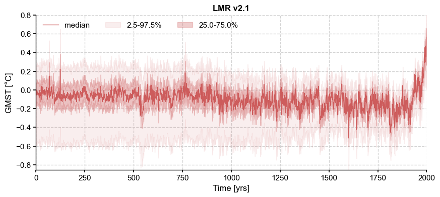
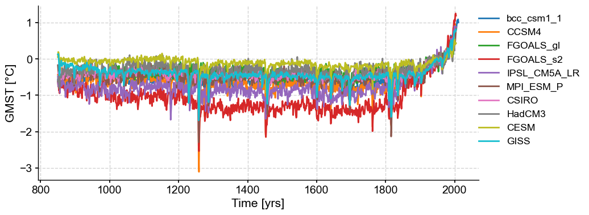
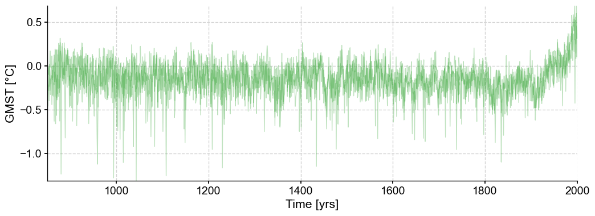
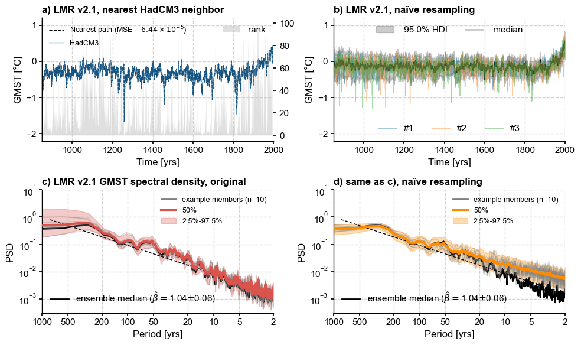

[Fig. 2] Naïve sampling#
[1]:
%load_ext autoreload
%autoreload 2
import pens
import pandas as pd
import matplotlib.pyplot as plt
from num2tex import num2tex
plt.style.use('default')
pens.set_style()
[2]:
path = '../data/gmt_MCruns_ensemble_full_LMRv2.1.nc'
LMR = pens.EnsembleTS().load_nc(path, var='gmt')
LMR.label = 'LMR v2.1'
LMR.value_name = 'GMST'
LMR.value_unit = '\N{DEGREE SIGN}C'
LMR.time_name = 'Time'
LMR.time_unit = 'yrs'
LMR.plot_qs()
[2]:
(<Figure size 1000x400 with 1 Axes>,
<Axes: title={'center': 'LMR v2.1'}, xlabel='Time [yrs]', ylabel='GMST [°C]'>)

[3]:
df = pd.read_table('../data/PMIP3_GMST.txt')
# create a new pandas.DataFrame to store the processed data
dfn = df.copy()
# remove the data columns for CESM and GISS ensemble members
for i in range(10):
dfn = dfn.drop([f'CESM_member_{i+1}'], axis=1)
dfn = dfn.drop(['GISS-E2-R_r1i1p127.1'], axis=1)
dfn = dfn.drop(['GISS-E2-R_r1i1p127'], axis=1)
dfn = dfn.drop(['GISS-E2-R_r1i1p121'], axis=1)
# calculate the ensemble mean for CESM and GISS, and add the results into the table
dfn['CESM'] = df[[
'CESM_member_1',
'CESM_member_2',
'CESM_member_3',
'CESM_member_4',
'CESM_member_5',
'CESM_member_6',
'CESM_member_7',
'CESM_member_8',
'CESM_member_9',
'CESM_member_10',
]].mean(axis=1)
dfn['GISS'] = df[[
'GISS-E2-R_r1i1p127.1',
'GISS-E2-R_r1i1p127',
'GISS-E2-R_r1i1p121',
]].mean(axis=1)
# display the processed data
dfn
[3]:
| Year | bcc_csm1_1 | CCSM4 | FGOALS_gl | FGOALS_s2 | IPSL_CM5A_LR | MPI_ESM_P | CSIRO | HadCM3 | CESM | GISS | |
|---|---|---|---|---|---|---|---|---|---|---|---|
| 0 | 850 | -0.570693 | -0.431830 | NaN | -0.620995 | -0.475963 | -0.170230 | NaN | -0.620517 | 0.049553 | 0.127429 |
| 1 | 851 | -0.698903 | -0.411177 | NaN | -0.753160 | -0.742970 | -0.303124 | -0.398695 | -0.553043 | 0.193858 | 0.138796 |
| 2 | 852 | -0.575440 | -0.404802 | NaN | -0.743508 | -0.758939 | -0.422623 | -0.406343 | -0.560791 | 0.185033 | 0.098170 |
| 3 | 853 | -0.724757 | -0.552719 | NaN | -0.869331 | -0.746460 | -0.335177 | -0.353557 | -0.438949 | 0.120470 | -0.054552 |
| 4 | 854 | -0.724328 | -0.734938 | NaN | -0.826238 | -0.684093 | -0.650792 | -0.416140 | -0.812194 | -0.081349 | -0.407169 |
| ... | ... | ... | ... | ... | ... | ... | ... | ... | ... | ... | ... |
| 1161 | 2011 | 1.013544 | NaN | NaN | NaN | NaN | NaN | NaN | NaN | NaN | NaN |
| 1162 | 2012 | NaN | NaN | NaN | NaN | NaN | NaN | NaN | NaN | NaN | NaN |
| 1163 | 2013 | NaN | NaN | NaN | NaN | NaN | NaN | NaN | NaN | NaN | NaN |
| 1164 | 2014 | NaN | NaN | NaN | NaN | NaN | NaN | NaN | NaN | NaN | NaN |
| 1165 | 2015 | NaN | NaN | NaN | NaN | NaN | NaN | NaN | NaN | NaN | NaN |
1166 rows × 11 columns
[4]:
# store each pyleoclim.Series() object into a dictionary and plot
import pyleoclim as pyleo
ts_dict = {}
for name in dfn.columns[1:]:
ts_dict[name] = pyleo.Series(
time=dfn['Year'].values, # the time axis
value=dfn[name].values, # the value axis
label=name, # optional metadata: the nickname of the series
time_name='Time', # optional metadata: the name of the time axis
time_unit='yrs', # optional metadata: the unit of the time axis
value_name='GMST', # optional metadata: the name of the value axis
value_unit='\N{DEGREE SIGN}C', # optional metadata: the unit of the value axis
verbose=False,
)
ts_list = [v for k, v in ts_dict.items()] # a pythonic way to convert the pyleo.Series items in the dictionary to a list
ms_pmip = pyleo.MultipleSeries(ts_list)
fig, ax = ms_pmip.plot(lgd_kwargs={
'bbox_to_anchor': (1.25, 1), # move the legend to the right side
})

Next we compute the Mean Squared Error between the target series (CCSM4) and all possible trajectories within the ensemble, then find a trajectory that mimimizes it:
[5]:
ts = ts_list[7] # select HadCM3
common_time = [850,2000]
lmr_slice = LMR.slice(common_time)
HadCM3 = ts.slice(common_time)
path_nearest = lmr_slice.sample_nearest(HadCM3.value, metric='MSE')
dist = path_nearest.distance # extract distance metric
#
ens_unif = lmr_slice.random_paths(model='unif',p=3, seed=44)
ens_unif.plot(color='tab:green',alpha=0.3)
[5]:
(<Figure size 1200x400 with 1 Axes>,
<Axes: xlabel='Time [yrs]', ylabel='GMST [°C]'>)

Let’s get the HDI score of each of these.
[6]:
import numpy as np
ns = ens_unif.nEns
hdi_score = np.zeros((ns))
for k in range(ns):
hdi_score[k], _ = lmr_slice.hdi_score(y=ens_unif.value[:,k])
Spectral analysis#
[7]:
es_orig = lmr_slice.to_pyleo(verbose=False)
PSD_orig = es_orig.spectral(method='mtm',settings={'standardize':False}) # this generates a MultiplePSD object
Performing spectral analysis on individual series: 100%|██████████| 2000/2000 [00:34<00:00, 57.61it/s]
[8]:
PSD_orig_aa = PSD_orig.anti_alias()
Applying the anti-alias filter: 100%|██████████| 2000/2000 [00:13<00:00, 148.34it/s]
[9]:
ps_rnd = lmr_slice.random_paths(model='unif',p=LMR.nEns, seed=2333)
es_rnd = ps_rnd.to_pyleo(verbose=False) # resample while preserving ensemble size
PSD_rnd = es_rnd.spectral(method='mtm',settings={'standardize':False})
Performing spectral analysis on individual series: 93%|█████████▎| 1860/2000 [00:33<00:02, 52.91it/s]
[10]:
PSD_rnd_aa = PSD_rnd.anti_alias()
Applying the anti-alias filter: 100%|██████████| 2000/2000 [00:17<00:00, 114.54it/s]
[11]:
percent = lmr_slice.trace_rank(y=HadCM3.value)
Making the figure#
[12]:
fig, axs = plt.subplots(2,2,figsize=(10,6))
axs = axs.flatten()
mse = '{:.2e}'.format(num2tex(dist)) # H/T https://stackoverflow.com/a/54557412
# a) closest match
ax0 = axs[0].twinx()
ax0.grid(False)
ax0.fill_between(lmr_slice.time, 0, percent, alpha=0.5, zorder=0,
facecolor='silver', label='rank')
#ax0.set_ylabel('LMR rank (%)')
path_nearest.plot(ax=axs[0],color='k', ls='--', label=rf'Nearest path (MSE = ${mse}$)')
ts.plot(ax=axs[0], ylim=(-2.2, 1.2), alpha=0.7, linewidth=1)
axs[0].legend(loc='upper left', ncol=1, fontsize=9,framealpha = 0.9)
axs[0].set_title('a) LMR v2.1, nearest HadCM3 neighbor',
loc = 'left', fontweight = 'bold')
ax0.legend(loc='upper right')
# b) naive resampling
lmr_nolbl = lmr_slice.copy()
lmr_nolbl.label = ''
lmr_nolbl.plot_hdi(prob=0.95, color='k',ax=axs[1],title='')
ens_unif.plot(ax=axs[1],alpha=0.4, label = 'duh', legend_kwargs={'show':True})
axs[1].set_title('b) LMR v2.1, naïve resampling',
loc = 'left', fontweight = 'bold')
axs[1].set_ylim(axs[0].get_ylim())
# split the legend in 2 parts
h, l = axs[1].get_legend_handles_labels()
legend1 = axs[1].legend(handles=h[:2], loc='upper center', ncol=2)
axs[1].add_artist(legend1)
l2 = ['#'+str(i+1) for i in range(3)]
legend2 = axs[1].legend(handles=h[2:], labels = l2, loc='lower center', ncol=3)
# c) Undisturbed spectra
ylims = [3e-4,10]
PSD_orig_aa.plot_envelope(ax=axs[2])
axs[2].set_title('c) LMR v2.1 GMST spectral density, original',
loc = 'left', fontweight = 'bold')
esm = lmr_slice.get_median() # extract and analyze the ensemble median
esm = esm.to_pyleo(label='ensemble median', verbose=False)
esm_spec = esm.spectral(method ='mtm',settings={'standardize':False})
esm_beta = esm_spec.anti_alias().beta_est() # estimate spectral exponent
esm_beta.plot(ax=axs[2], ylim=ylims, color='k')
h, l = axs[2].get_legend_handles_labels()
legend1 = axs[2].legend(handles=h[:3], loc='upper right',fontsize = 9)
axs[2].add_artist(legend1)
legend2 = axs[2].legend(handles=h[3:], loc='lower left')
# d) Resampled spectra
naive_clr = 'darkorange'
PSD_rnd_aa.plot_envelope(ax=axs[3],curve_clr=naive_clr, shade_clr=naive_clr)
axs[3].set_title('d) same as c), naïve resampling',
loc = 'left', fontweight = 'bold')
esm_rnd = ps_rnd.get_median() # extract and analyze the ensemble median
esm_rnd = esm_rnd.to_pyleo(label='ensemble median',verbose=False)
esm_rnd_spec = esm_rnd.spectral(method ='mtm',settings={'standardize':False})
esm_rnd_beta = esm_rnd_spec.anti_alias().beta_est() # estimate spectral exponent
esm_rnd_beta.plot(ax=axs[3],ylim=ylims, color='k', ylabel='PSD')
h, l = axs[3].get_legend_handles_labels()
legend1 = axs[3].legend(handles=h[:3], loc='upper right',fontsize = 9)
axs[3].add_artist(legend1)
legend2 = axs[3].legend(handles=h[3:], loc='lower left')
#axs[3].get_legend().remove()
axs[3].set_xlabel(axs[2].get_xlabel()) # make labels the same
#axs[3].legend(handles=h[3:], loc='lower left')
fig.tight_layout()
